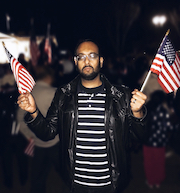

Avengers Assemble:
Unite the Democratic Party
The Democratic Party has had a lot of soul searching to do since our past presidential election. How we activate and assemble now will determine the success of of our party for generations to come. While our HoCo Democratic Central Committee has done its best to unite and coordinate all the progressive and democratic groups that have sprouted up in record numbers since the 2016 election, we can and should be doing more.
Whether you are part of Together We Will, Do the Most Good, Indivisible, or consider yourself a card carrying Democrat, a Berniecrat, or just an individual with a firm belief in progressive values, our efforts will only be realized through unity and coordinated efforts.
Hard Truth
Let's not dance around the truth here. Several factions within our Democratic party exist and several of these groups will disagree with each other from time to time. And that's ok. Engaging in dialogue and political discourse is a natural byproduct of a democracy. While some groups may call for revolutionary change and others just want to take an incremental approach, we all want the same results for Howard County, and in turn America. Whichever approach we as party decide to take moving forward, we must be clear in our communication that both these approaches are not mutually exclusive.
Strategy
In my brief time as a member of the HoCo Democratic Central Committee, we are actively working towards developing a monthly message via print and social media that will require the input and approval of several of our Democratic and progressive clubs. I plan to continue to develop, support, and implement these strategies to ensure the success of our party. Listening to each other, communicating with each other, sharing our convictions and beliefs, ensuring our message is on base and coordinated will be the KEYS (Dj Khaled voice) to success in 2018, 2020, and beyond. THEY don't want us to win, but we are going to win harder and better than before! (end Khaled voice)
Developing a rapid response team ready to send letters to the editor and other media outlets can be achieved if our party better utilizes the brevity of social media tools at our disposal, including WhatsApp, Kik, GroupMe, Facebook Messenger, and more. Coordinating and uniting quickly and efficiently will be crucial for the next time when the other party's leaders say something crazy like "shithole countries" or "deport Mexicans and Muslims." We must utilize emerging platforms such as SnapChat, Slack, Instagram and more to reenergize our younger electorate, which will be pivotal to ushering in the "blue tsunami" in our county.
Lastly and arguably most important, the duty of the Howard County Democratic Central Committee is to facilitate the election of Democrats. I plan to embrace this responsibility fully and wholeheartedly. We must encourage our youth, our community leaders, our women, our people of color, and anyone with a commitment to Democratic values to seek political office and get involved in the process. Familial dynasties, multi-term career politicians, and those with big money influence is not how we get change. Actively identifying, supporting, cultivating, and harnessing the energy of our most promising activists/community leaders is how we get there.
Our Vulnerable Voices
Ban Muslims and Mexicans. Deport the illegals. Why bring in people from "shithole" countries? Black Lives Matter is a terrorist group. Black kids hanging out in Mt. Hebron are part of the "jungles" and Muslims congregating in other areas of the school form "no fly zones." No, these aren't my words. This is the lexicon and rhetoric being facilitated at the national level and slowly filtering in to the mentality of our local institutions. This is dangerous talk that has emboldened a lot of bigots and racists to freely speak this way to immigrants and communities of color. Howard County is no exception, despite the majority of us "choosing civility."
Understand America has and always will be a nation of immigrants. We are the wealthiest nation in the history of the world that directly benefits from sustained job growth and innovations made possible by our immigrant communities and communities of color. The Howard County Democratic Party has and must continue to be on the forefront of protecting these vulnerable voices.
Facts
The FBI's hate crime report for 2016 shows a second straight year of increases - the first time thats happened in a decade. This report means that in the last two years, the number of reported hate crimes has risen by nearly 12%. Government studies show that the actual number of hate crimes may be as high as 250,000 - more than 40 times the 6,121 incidents that the FBI reports for 2016. It is no coincidence that this data coincides directly with the xenophobic and racist comments being perpetuated by leaders on our national stage.
Protect The People
The Howard County Democratic Party must be the shining example to the rest of the country by doubling down on diversity, inclusion, and tolerance. We are the party of the people and the working class. If elected to the HoCo Democratic Central Committee, I will do everything in my power to insure that we continue to follow this mantra and protect our most vulnerable. I will be sure that I not only speak out when intolerance rears it ugly head, but will compel and actively lobby our Democratic leadership to pursue legislation that solidifies and strengthens the protections these communities deserve.
A latino kid just trying to make it in school should never have to live in fear of his family being deported. A muslim woman shopping in the grocery store should never have to worry about strangers openly harassing her religion or her choice to wear a hijab. African American youth should not have to worry about being profiled and targeted during a traffic stop while driving into work. These are real people with real stories that have suffered real consequences. We can and must do better to defend each other and be the shining example to the world that diversity is truly our promise, not our problem.
The Revolution Will Not Be Televised - It will be Blockchain'ed
Blockchain is a transformative technology that is rapidly changing the digital world around us. You might have heard the word "Bitcoin" or "cryptocurrency" from one of your friends, which is currently a speculative, unregulated investment vehicle. While cryptocurrency and digital assets are the current major use case for blockchain, the technology has rapidly evolved to address other major use cases, which could transform government services as we know it.
So what is blockchain?
It's kind of like a database. It is understood as a record of ledgers arranged in data batches called blocks that use cryptographic validation to link themselves together. Put simply, each block references and identifies the previous block by a hashing function, forming an unbroken chain, hence the name. The clever bit is that the ledger is not stored in a master location or managed by any particular body. Instead, it is said to be distributed, existing on multiple computers at the same time in such a way that anybody with an interest can maintain a copy of it. Any party on a blockchain has access to the entire database and no single party controls the information. Communication is peer-to-peer and every transaction is visible to anyone on the system.
Value Proposition
So why is this important for Howard County and what does it have to do with the Democratic Party? Blockchain has the ability to revolutionize our government services by improving transparency, efficiency, and trust in information sharing. Blockchain can be used to make our procurement services in the county significantly faster, which may help us validate and approve minority businesses that wish to contract with the county government much quicker and more fair.
Blockchain can also be used for general financial management activities, issuing credentials, supply chain management, smart contracts, health care data, store real estate deeds and make them quickly accessible, along with better managing appropriated county funds and seeing them in near real time.
Truth In Government
Our community demands a more fair and transparent government, one which dispersed funds that are said to be allocated/appropriated to certain efforts/services can now be seen dispersed in real time; in addition to being validated and verified by everyday citizens.
Trust, transparency, and accountability in government has and continues to be one of society's major demands. Blockchain might just be the revolution that finally gives the people exactly that. It is currently being tested by local governments, financial institutions, and being piloted as we speak by several large federal government agencies, including DOD and HHS. Howard County and the Democratic Party should lead in this area by embracing the blockchain to bring back trust and truth in government.
Full Disclosure: I own small amounts of select cryptocurrencies.